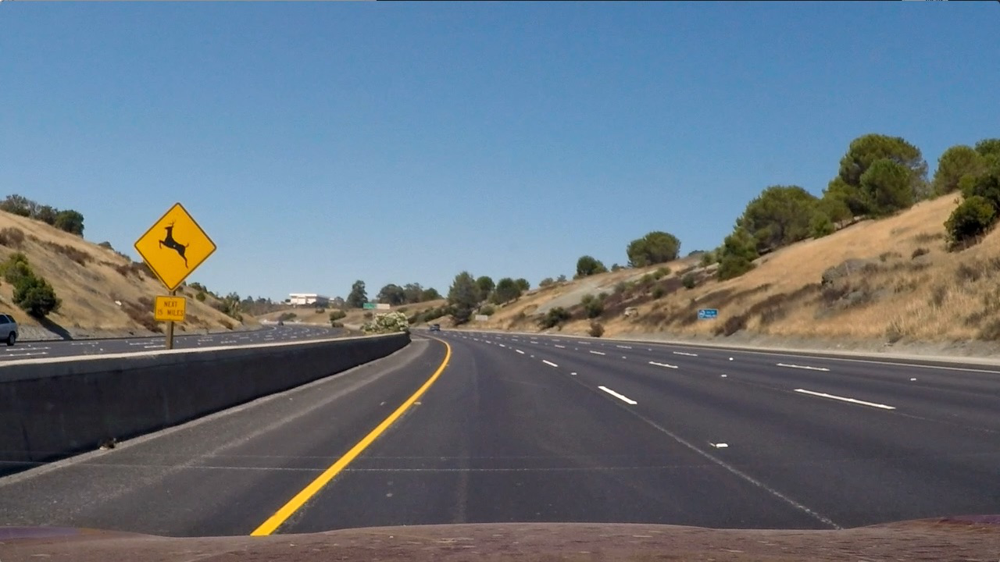
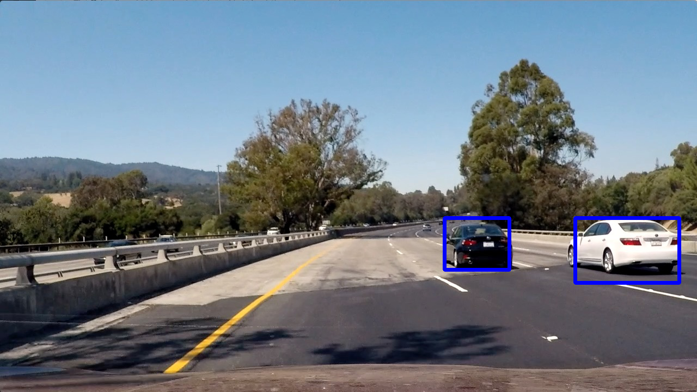
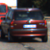
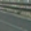
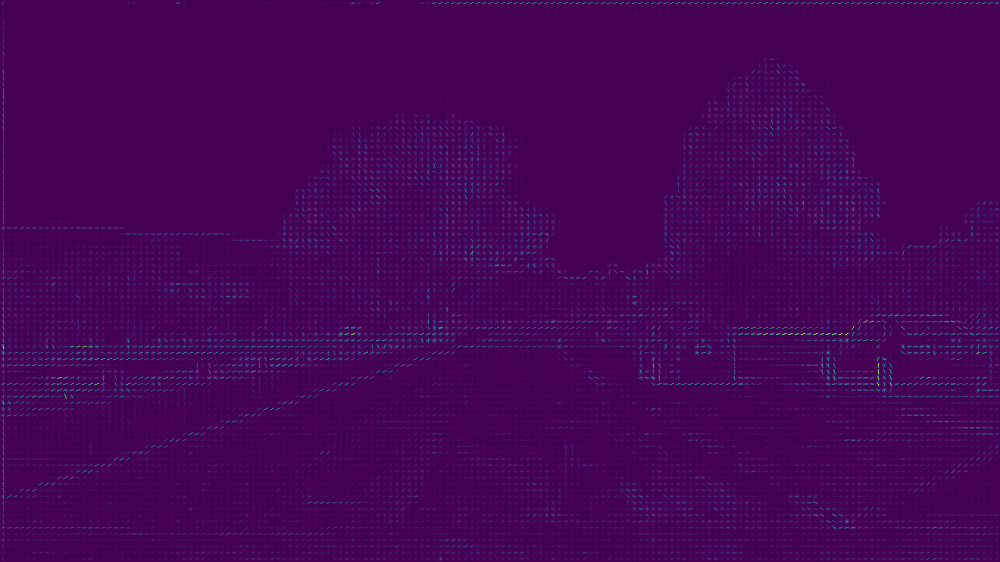
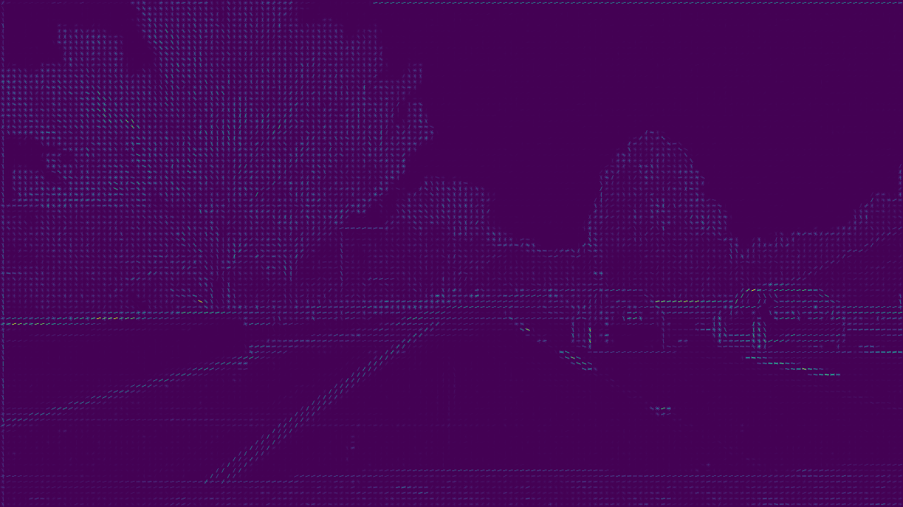

Vehicle Detection Project
The goals / steps of this project are the following:
 
output_images/cars.txt and output_images/non_cars.txt.output_images/car_features.p and output_images/noncar_features.poutput_imagesfolder.project_video.mp4 and save a new video named output_images/project_video_output.mp4 with bounding boxes drawn around detect cars.The steps taken to complete this project are as follows:
The first step of the pipeline is to identify and extract features from the data, which we can then train a classifier on to predict the presence of vehicles in an image. The dataset is a combination of vehicle and non-vehicle, and examples extracted from the project video itself. The data is split into vehicles and non-vehicles subsets, and examples of a vehicle image (left) and non-vehicle image (right) can be seen below:
 
Features were extracted using a combination of Histogram Of Gradients (HOG), spatial binning of the color image, and histogram of pixel intensity (color histogram). The HOG features were found using the sklearn hog() function, and the parameters used were found by trial and error. Some of the parameters I found to be most effective were: orient=9, pixelspercell=(8, 8), and cellsperblock=(2, 2).
The code for extracting the HOG features can be found on lines 9-26 of the code/features.py file. The function bin_spatial() was used to resize the images to 32x32 resolution and transform it into a vector, and the code can be found on lines 29-33 of the code/features.py file. The code for creating a color histogram of the images can be found in the function color_hist() on lines 36-43 of the code/features.py file. I wrapped all of these functions in the extract_features() function, which outputs one feature vector for each image. A visualization of HOG features of a vehicle (left) and non-vehicle (right) can be seen below:
 
Once the features were extracted from the images, I used them to train a classifier for detecting vehicles in an image. I used a Linear SVM as my classifier, feeding in the normalized feature vectors for vehicles and non-vehicles. Normalization was performed using the sklearn StandardScaler() function (code/classifier.py line: 15). The data was also selected randomly using the sklearn train_test_split() function (code/classifier.py line: 24), and 10% of the data was held out as the test set. All of the code for training the classifier can be found in the code/classifier.py file.
I implemented a sliding window technique to search a portion of an image to predict whether or not a vehicle was present. In order to increase efficiency, I reduced the search area by setting a region of interest which excluded the top half of the image, and also reduced the image size by 1.5. As the window slides along the search area, the classifier is used to predict whether or not a vehicle is present based on the features in that sample. The code for detecting cars can be found in the find_cars() function on lines 23-86 of the code/detect_cars.py file.
In order to reduce false positives, and make the bounding boxes more consistent and smoother between frames of a video stream, I used a heatmap of the positive detections reported by the classifier. I keep an average of the heatmaps over 15 frames of video, and use a threshold to remove false positives. The scipy label() function was used to identify "blobs" in the heatmap, which correlated to vehicles in the image. The code for adding the detections to the heatmap can be found on line 84 of the code/detect_cars.py file, and the function which applies the threshold can be found on lines 89-92 of the same file. An example of an input image (left) and a heatmap applied to that image (right) is shown below:
Bounding boxes are displayed on the images around detected cars using the draw_labeled_bboxes() function in the code/detect_cars.py file. This function is passed the labels aka blobs of the heatmaps mentioned above. By using an average of the heatmaps over 15 frames of video, the result is a smooth and consistent bounding box around vehicles without any false positives in the project video.
Here's a link to my video result